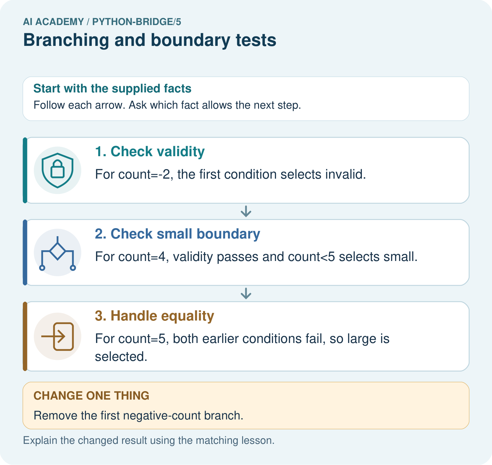
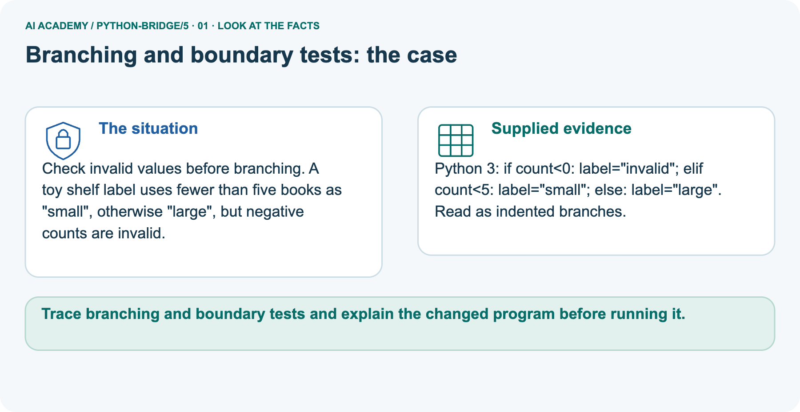
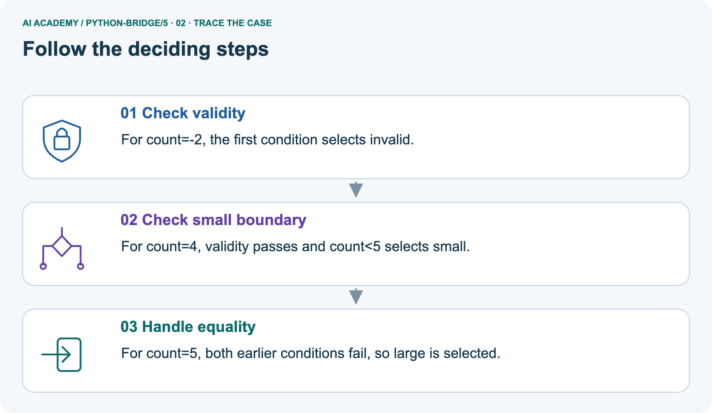
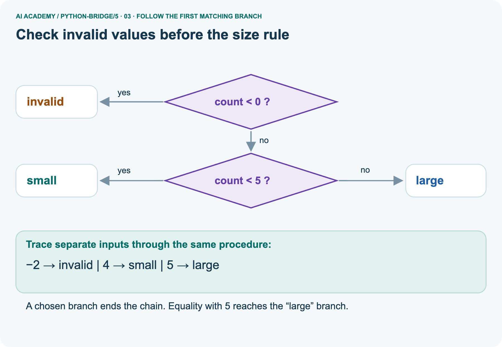
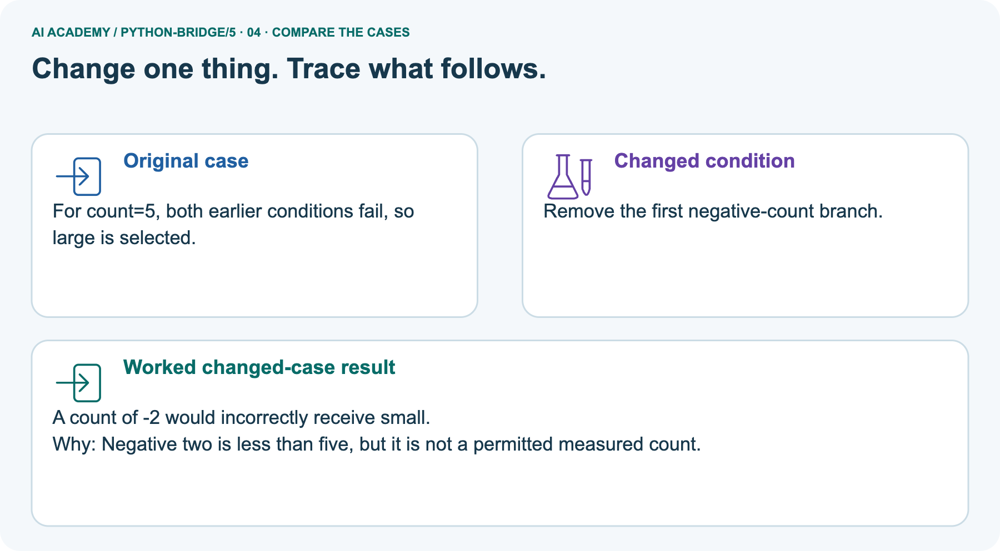
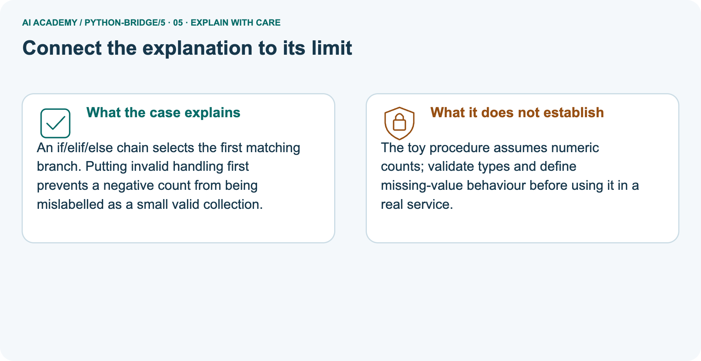
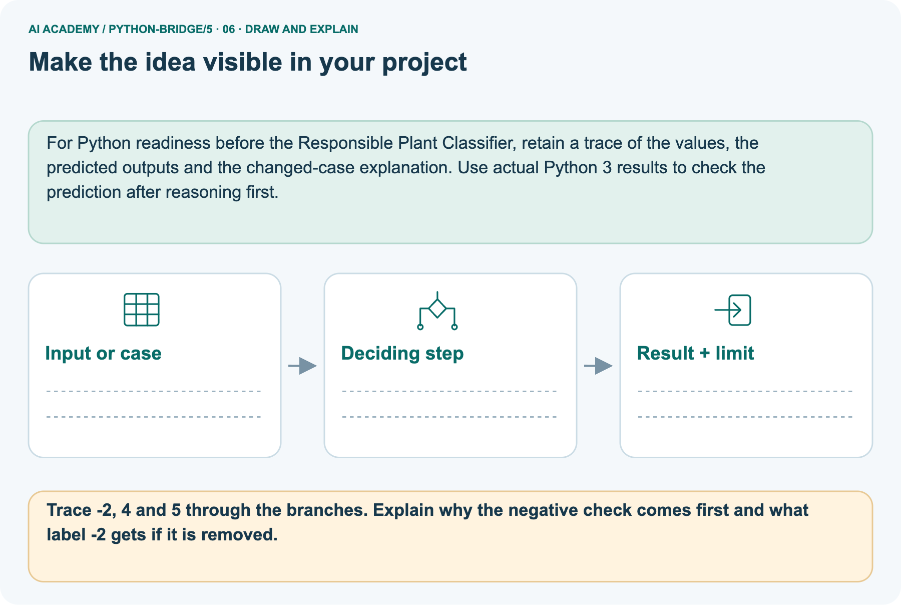

AI Academy · Python readiness bridge · Teacher guide
Branching and boundary tests
Learn to understand, design, build, test and explain AI systems responsibly.
Project: Python readiness portfolio
Teacher guide · 1 of 9
Prepare the purpose, prerequisites and materials
Prepare Branching and boundary tests: check the target, prerequisites, resources and adaptable teaching schedule.
Teach the learning cycle
Primary target: Trace the selected branch in an if elif else chain
| Session | Sequence and minutes | Resources |
|---|---|---|
| Session 1 · Understand · 45 min | 0–7: recall and prerequisite; 7–15: inspect the concrete case and predict; 15–30: teacher models the worked trace; 30–40: learners explain a step using the text and visual; 40–45: check the core idea. | Sections 1–6; record the brief recall in the workbook. |
| Session 2 · Practise · 45 min | 0–5: retrieve the procedure; 5–15: W2 completion practice; 15–23: explain and check with a partner; 23–30: each learner answers the misconception check; 30–40: targeted reteaching or a harder variation; 40–45: prepare the investigation. | Sections 7–10; use the matching workbook W2 and misconception check. |
| Session 3 · Investigate and transfer · 45 min | 0–5: retrieve the decision rule; 5–20: investigate or trace; 20–30: start the independent case; 30–38: connect the project; 38–43: act on feedback; 43–45: plan the return check. | Sections 9 and 11–14. Give extra time to finish the full task set; use Section 15 when the week includes a coding lab. |
This is a starting allocation of 135 minutes, not a validated duration. Preserve all named topics. Schedule extra time for connected examples, the full investigation, independent cases and project building.
Repeated copies of a case share one recorded attempt; they are not new evidence.
Case exposure check: this source example appears in ai-2/3, python-bridge/5. Reuse a familiar case for recall or modelling; verify that the case used to assess transfer has not already received feedback.
Retrieval answer guidance
Boolean conditions
Without opening the old lesson, explain one key idea from Boolean conditions. Give an example and a mistake that the idea helps you avoid.
Look for: Translate stated requirements into comparisons
Reference example, not the only acceptable wording: (minutes <= 12) and quiet. At most includes equality, so <= is required; the nonnegative integer and Boolean input contract still applies.
Values variables and types
Without opening the old lesson, explain one key idea from Values variables and types. Give an example and a mistake that the idea helps you avoid.
Look for: Distinguish integer, floating-point, text and Boolean values
Reference example, not the only acceptable wording: 12 is int; 1.5 is float; "12" is str; False is bool; "False" is str. Quotes mark text even when the characters spell a Boolean name.
Teach ordered selection and indentation using a written input contract. A script can cover all branches while missing an equality bug. Reference: https://docs.python.org/3/tutorial/controlflow.html#if-statements.
The new task requires one four-way chain; independently correct equivalent conditions are acceptable.
Outcomes
Trace the selected branch in an if elif else chain
Use indentation to identify which statements belong to a branch
Test values at and around a decision boundary
Preparation
Python 3 editor and branches.py
The written duration rule and boundary case cards
Blank trace table with a skipped marker
Prerequisite answer
<= accepts equality; < excludes it. At 12 the two conditions produce different Boolean values.
End goal for the pictorial case
Trace branching and boundary tests and explain the changed program before running it.
This added worked case illustrates the week’s main idea. Retain all original and connected topics; schedule its practice within the teaching cycle.
Teacher guide · 2 of 9
Explain and model the mechanism
Model Branching and boundary tests using the supplied case, labelled mechanism and reasoning. Make the scope of each conclusion explicit.
Explain Branching and boundary tests · 1
A fictional activity sorter labels a supplied integer duration. Negative values are Invalid; values from zero through 12 are Short; larger values are Long. The labels describe duration only.
Write this requirement before the program so that a test has an expected answer independent of the code.
Explain Branching and boundary tests · 2
An if statement selects a block when its condition is true. An elif is considered only if earlier conditions in the same chain were false. An else handles the remaining cases. Colons end the condition lines.
Use four spaces for the indented statements and keep related branches aligned.
The output is Short. For 12, the first condition is false and the second is true. The else block is skipped. print(label) is not indented, so it runs after the selected branch.
Each path assigns label before this line reads it. Change only minutes and save before each fresh run.
| Term | Meaning |
|---|---|
| Branch | A possible path through a program |
| Condition | An expression used to decide which path to take |
| Indentation | Leading spaces that identify a Python code block |
| Boundary | A value where a classification may change |
| Regression check | A previous test rerun after an edit to detect a new failure |
One chain chooses one label
The faulty < 12 version prints Long for 12, contrary to the inclusive Short rule. Repair to <= 12 and rerun 11 or 13 as well as 12.
Exit: exact 12 is missing. -1, 2 and 20 can visit all branches even when the equality comparison is wrong.
Model the reasoning aloud
Use the complete worked example below before asking learners to complete W2. Reveal a small part, invite a prediction, then explain the deciding step.
These teacher notes contain solutions; do not reveal the independent case answer during modelling.
| Input minutes | Expected label | Reason for this test |
|---|---|---|
| -1 | Invalid | Negative input rejection |
| 0 | Short | Lowest valid duration |
| 11 | Short | Just below the upper boundary |
| 12 | Short | Exact upper boundary |
| 13 | Long | Just above the boundary |
These tests exercise every branch and the equality case. A change from <= 12 to < 12 is exposed by 12; testing 11 alone misses it.
Branch coverage means every branch was exercised, but it does not prove every condition is correct.
| Thinking move | Teacher prompt |
|---|---|
| Plan | What is given? What is the question? Which procedure fits these facts? |
| Do | Point to each input and intermediate step in the worked trace. Name the rule that allows the next step. |
| Check | Does the output answer the question? Which assumption or limitation prevents a larger claim? |
Use the diagram and verbal explanation together. Ask learners to match a sentence to a specific visual step; do not assign learners fixed visual or auditory learning styles.
A pictorial worked case: Branching and boundary tests
Check invalid values before branching. A toy shelf label uses fewer than five books as "small", otherwise "large", but negative counts are invalid.
The facts we will use
Supplied facts
Python 3: if count<0: label="invalid"; elif count<5: label="small"; else: label="large". Read as indented branches.

Read the picture one step at a time
Why this result follows
Why the result follows
An if/elif/else chain selects the first matching branch. Putting invalid handling first prevents a negative count from being mislabelled as a small valid collection.
What this example does not establish
Keep the stated limit
The toy procedure assumes numeric counts; validate types and define missing-value behaviour before using it in a real service.
Change one thing in the pictured case
Change one thing
Change: Remove the first negative-count branch.
Predicted result
Prediction: A count of -2 would incorrectly receive small.
Why the result follows
Reason: Negative two is less than five, but it is not a permitted measured count.
Ask while showing the picture
Ask while showing the picture · 3
Cover the result. Ask learners to name the inputs and predict the next step. Uncover one step, connect the icon to the actual procedure, and explain its evidence. Then change the supplied condition and compare.
The picture is a representation; it does not document execution of a real AI model.
Teacher guide · 3 of 9
Demonstrate and guide practice
Demonstrate Branching and boundary tests, reduce support deliberately and check individual reasoning before discussing answers.
| Time or stage | Teacher action |
|---|---|
| Session 1 start to 7 minutes | Retrieve inclusive comparison and collect the prerequisite. |
| 7 to 20 minutes | Translate the duration rule and complete W1. |
| 20 to 33 minutes | Trace the diagram and code, marking skipped branches. |
| 33 to 45 minutes | Complete W2 with predicted and actual outputs. |
| Session 2 start to 8 minutes | Retrieve why equality needs a separate test. |
| 8 to 20 minutes | Run the faulty two-if script and complete W3 and the guided question. |
| 20 to 35 minutes | Collect the new sorter in W4 before hints. |
| 35 to 45 minutes | Use W5 and the exit to distinguish coverage from correctness. |
Use the worked example in Sections 3 and 6. Collect a prediction before revealing its result; ask the learner to point to each intermediate fact.
Provide movable branch cards and align the four-space blocks on a ruled page. Permit an oral trace alongside the script and record help.
Extension: swap the zero and <= 6 checks and find the smallest nonnegative counterexample.
Reduce help deliberately
Completion practice
Completion task: For -1, 12 and 13, record checked conditions, skipped conditions and the final label. Run each as a fresh script after predicting.
Reasoning to listen for
Teacher check: -1: first True, second skipped, Invalid. 12: first False, second True, Short. 13: both False, else selected, Long. Retain observed results separately.
Start by identifying the given inputs together. Leave the intermediate steps blank. If needed, model one step, then withdraw that help on the next step. Move to a full trace only when the partial trace is understood.
For partners, alternate explainer and checker; collect a response from every learner before discussion.
Individual reasoning check
Use the worked case for Branching and boundary tests. Proposed explanation: “Every condition in the chain always runs”. Decide whether this explanation is supported.
Point to the step or supplied fact that decides; explain your repair if needed.
Expected repair
Expected correction: Once one condition succeeds, later alternatives are skipped.
Collect explanations, not only yes/no votes. If a misunderstanding is common, re-model the relevant step for the class.
If it affects a few learners, give a short targeted group explanation while others solve a more demanding variation.
Pictorial practice question
Trace -2, 4 and 5 through the branches. Explain why the negative check comes first and what label -2 gets if it is removed.
Reasoned teacher answer
The labels are invalid, small and large. The first branch stops negative inputs before the small rule. Without it, -2<5 produces small and breaks the input contract.
Changed-case reasoning: A count of -2 would incorrectly receive small. Negative two is less than five, but it is not a permitted measured count.
Collect each learner’s explanation before discussion. Use the first missing connection between input, deciding step and result to choose support. This question is worked-case practice, not fresh mastery evidence.
Teacher guide · 4 of 9
Run the investigation and diagnose misconceptions
Run the Branching and boundary tests investigation and use the first unsupported step to choose a teaching response.
Every condition in the chain always runs: Once one condition succeeds, later alternatives are skipped.
Two if statements behave like if then elif: Independent if statements can both run and overwrite a result.
Indentation is cosmetic: Leading spaces define the branch body.
Every branch tested means every input correct: A missing equality case can hide a wrong comparison.
Use Section 9 for the evidence ledger. Add a boundary or missing-input case and record the expected response before checking. More successful repeats of one case do not establish wider coverage.
Match the support to the first error
| What the response shows | Next teaching action |
|---|---|
| Missing or misread facts | Read the case aloud, mark supplied versus unknown facts, and let the learner restate it. |
| Wrong procedure | Return to the deciding step in the worked case. Contrast it with the proposed incorrect explanation. |
| Arithmetic or implementation error | Trace intermediate values or lines; preserve the first mismatch and retry that step. |
| Correct result without a reason | Ask for a trace and a changed case before marking independent understanding. |
| An unsupported wider claim | Ask which supplied evidence supports the claim and which further observation would be needed. |
Offer an oral explanation, drawing, enlarged visual or fewer examples when that removes a reading/writing barrier. Keep the same reasoning goal.
Stretch secure learners by changing a boundary or assumption and asking them to defend the effect, not simply by assigning more of the same questions.
Teacher guide · 5 of 9
Assess and explain the answers
Use the Branching and boundary tests questions, teacher keys and criteria after the relevant attempts. Previously discussed cases are practice; protect the separately selected independent task.
Guided and exit questions
The faulty < 12 version prints Long for 12, contrary to the inclusive Short rule. Repair to <= 12 and rerun 11 or 13 as well as 12.
Exit: exact 12 is missing. -1, 2 and 20 can visit all branches even when the equality comparison is wrong.
W1 Explain the chain
Workbook question · W1
Describe the purpose of if, elif and else in the worked duration sorter. Explain why print(label) is outside the indented branches.
Teacher reasoning · W1
if tests negative first; elif checks <= 12 only after that fails; else handles the rest. Unindented print runs after any selected branch, whose assignment gives label a value.
W2 Trace the tested path
Workbook question · W2
For -1, 12 and 13, record checked conditions, skipped conditions and the final label. Run each as a fresh script after predicting.
Teacher reasoning · W2
-1: first True, second skipped, Invalid. 12: first False, second True, Short. 13: both False, else selected, Long. Retain observed results separately.
W3 Repair the overwritten result
Workbook question · W3
Trace the two-independent-if example for -1. Identify which assignment overwrites the earlier label and make the smallest repair.
Teacher reasoning · W3
The first assignment sets Invalid; the second if also succeeds and changes label to Short. Replace the second if with elif. The repaired output is Invalid.
W4 Build a new sorter independently
Workbook question · W4
Use an integer tiles count. Label a negative value Invalid, zero Empty, 1 through 6 Small and values above 6 Large. Write an ordered if elif else script and predict -1, 0, 1, 6 and 7. Include one print after the chain.
Teacher reasoning · W4
Use if tiles < 0, elif tiles == 0, elif tiles <= 6, else, assigning the respective labels and printing after the chain. Outputs Invalid, Empty, Small, Small, Large. Zero must be handled before the <= 6 branch.
W5 Choose revealing regression tests
Workbook question · W5
A repair changes the small-count condition from < 6 to <= 6. Name the case that exposes the original error and two different kinds of earlier cases to rerun.
Teacher reasoning · W5
6 exposes the original wrong Large label. Rerun zero for Empty and a negative count for Invalid, or 7 for Large. Passing only 6 does not check earlier branches.
Independent assessment and fresh retry
Teacher key · Independent assessment and fresh retry
W4 must assign one correct label on all five cases and explain zero before the small branch. After support, retry a shelf-count sorter with Empty at zero, Few for 1 through 4, Many above 4 and Invalid below zero.
Expected outputs at -1, 0, 4, 5 are Invalid, Empty, Few, Many.
Assess independent transfer
Independent question · withhold the key
Selected case: Predict the action for 30, then trace 29 and -1. Explain why validity is checked before the lamp decision.
reading = 30
if not 0 <= reading <= 100:
action = "invalid"
elif reading < 30:
action = "on"
else:
action = "off"
print(action)
Selected case answer
Teacher key · Selected case answer
30 gives off, 29 gives on, -1 gives invalid. Checking validity first prevents an invalid negative reading from being accepted as a lamp-on decision.
| Dimension | Evidence required |
|---|---|
| Explanation | Names the applicable idea or procedure and ties it to the supplied facts. |
| Trace and result | Preserves the given inputs and shows the relevant intermediate steps; distinguishes a prediction from an observed execution. |
| Limits | States the assumptions, missing evidence or conditions under which the result would change. |
Teacher key · Selected case answer
Record each dimension as not yet, with support, or independent. Accept a valid alternative procedure with a defensible trace.
Do not penalise an honestly recorded model failure if the learner correctly explains its evidence and limits.
Feedback that the learner uses
Name the earliest unsupported step and give one action to repair it. Have the learner make that repair now and explain why. Then assess the relevant skill on a fresh, fully specified case.
Confirm it was not previously practised with feedback; solve and check the new case before assigning it. A follow-up design prompt is a starting brief, not automatically an equivalent test.
Teacher guide · 6 of 9
Connect the project, support and next lesson
Connect Branching and boundary tests to Python readiness portfolio, adapt support and plan a later changed-case check.
Add a labelled branching and boundary tests evidence sheet to Python readiness portfolio. Show how you can trace the selected branch in an if elif else chain.
Use the supplied fictional case and keep its inputs, intermediate steps, calculation or prediction, and limitation. Connect this record to last week’s record; a matching answer without a trace is insufficient.
Provide movable branch cards and align the four-space blocks on a ruled page. Permit an oral trace alongside the script and record help.
Extension: swap the zero and <= 6 checks and find the smallest nonnegative counterexample.
Week 6 repeats a block with loops and records each change in state.
Retain the project ledger and assess a changed case after support. Check the relevant prerequisite before carrying this component forward.
Plan the delayed return
Suggested return points in this level: python-bridge/6, python-bridge/8, python-bridge/11. Use actual classroom dates, adjusting for holidays and gaps.
One, three and six teaching weeks are scheduling choices, not a claimed optimal spacing.
At a delayed check, ask for the idea from memory and a changed application. Compare with the earlier independent response and record support used.
For a new level, revisit the previous capstone before checking the new prerequisites.
| Record | Teacher evidence |
|---|---|
| Learner code and date | |
| Concept and case used; prior exposure | |
| Explanation / trace / limits | |
| Support and first repair | |
| Changed case and delayed outcome | |
| Next teaching action |
Use the evidence to choose reteaching or the next step. A completed page, confidence rating or attractive project does not by itself demonstrate understanding.
Project evidence from this case
For Python readiness before the Responsible Plant Classifier, retain a trace of the values, the predicted outputs and the changed-case explanation. Use actual Python 3 results to check the prediction after reasoning first.
Teacher guide · 7 of 9
Prepare, teach and assess
Use this preparation summary alongside the detailed Branching and boundary tests lesson; it is a checklist rather than a replacement for the full sequence.
Teaching target
Teaching target: Trace the selected branch in an if elif else chain
Prepare the labelled worked-case picture, the matching workbook, fictional input cards and a place for individual responses. Check a local Python 3 environment before class; have a paper-trace version ready.
| Session | Plan | Resources |
|---|---|---|
| Session 1 · Understand · 45 min | 0–7: recall and prerequisite; 7–15: inspect the concrete case and predict; 15–30: teacher models the worked trace; 30–40: learners explain a step using the text and visual; 40–45: check the core idea. | Sections 1–6; record the brief recall in the workbook. |
| Session 2 · Practise · 45 min | 0–5: retrieve the procedure; 5–15: W2 completion practice; 15–23: explain and check with a partner; 23–30: each learner answers the misconception check; 30–40: targeted reteaching or a harder variation; 40–45: prepare the investigation. | Sections 7–10; use the matching workbook W2 and misconception check. |
| Session 3 · Investigate and transfer · 45 min | 0–5: retrieve the decision rule; 5–20: investigate or trace; 20–30: start the independent case; 30–38: connect the project; 38–43: act on feedback; 43–45: plan the return check. | Sections 9 and 11–14. Give extra time to finish the full task set; use Section 15 when the week includes a coding lab. |
Before class, solve the supported practice: For -1, 12 and 13, record checked conditions, skipped conditions and the final label. Run each as a fresh script after predicting.
Supported practice answer
Reasoned practice answer: -1: first True, second skipped, Invalid. 12: first False, second True, Short. 13: both False, else selected, Long. Retain observed results separately.
Check every learner before discussion: Use the worked case for Branching and boundary tests. Proposed explanation: “Every condition in the chain always runs”. Decide whether this explanation is supported.
Point to the step or supplied fact that decides; explain your repair if needed.
Repair the misconception
Misconception repair: Once one condition succeeds, later alternatives are skipped.
Support without giving away the answer
Support: read the exact case aloud, enlarge the labelled picture, supply input cards and model only the first deciding step. Accept a spoken explanation or drawing; retain the reasoning goal.
Extend the reasoning
Extension: Remove the first negative-count branch. Require a prediction and a reason before comparing. Expected result: A count of -2 would incorrectly receive small.
Reason: Negative two is less than five, but it is not a permitted measured count.
Protect the independent attempt
Independent assessment: withhold the reserved answer until the learner has attempted the new case. Record support separately from correctness.
| Criterion | Not yet | With support | Independent |
|---|---|---|---|
| Explanation | Names an answer without a deciding fact | Uses a hint to link fact and decision | Explains the deciding fact in own words |
| Trace or test | Cannot connect input and result | Completes steps with prompts | Traces or tests a changed case accurately |
| Limits and revision | Claims more than evidence supports | Names a limit after a prompt | States a defensible limit and useful next test |
Project checkpoint
Project checkpoint: Python readiness portfolio. Keep runnable code, predictions, actual outputs, one repaired error and an explanation of a function on changed inputs.
Use the weekly teacher answer for topic-specific reasoning. A saved progress tick is an activity record; judge mastery from the learner’s explanation and evidence.
Teacher guide · 8 of 9
Use feedback, labs and repair paths
Use feedback, earlier review and portfolios purposefully. Apply the coding routine only when this lesson has an executable lab.
Use the two formative questions as supported practice, not as independent mastery scores. Discuss the deciding evidence rather than accepting a guessed selection.
The feedback comes from the reviewed public worked case. Do not reveal the separately reserved independent teacher answer until the learner has attempted that case.
Ask students to predict before running code. Preserve errors and actual outputs; collect a changed test and an explanation. The branch-boundary and indexing lessons deliberately include failure cases.
Use the earlier worked-explanation links to address a specific missing building block, then return to the current question. Adapt this suggestion after observing the learner; it is not an automatic diagnosis.
Collect the completed-work portfolio as evidence. Record support separately from correctness, and assess explanation, trace/test and limitations. Progress ticks and quiz selections alone do not establish mastery.
Teacher guide · 9 of 9
Visual concept journey
Show one Branching and boundary tests graphic at a time, request a prediction and discuss its trace before the independent assessment.
Use one picture at a time. Hide a worked result before asking for a prediction, then reveal it for feedback. These are supported teaching cases; retain the separate independent assessment for a fresh first attempt.
01. Branching and boundary tests: the case

Check invalid values before branching. A toy shelf label uses fewer than five books as "small", otherwise "large", but negative counts are invalid.
Supplied facts: Python 3: if count<0: label="invalid"; elif count<5: label="small"; else: label="large". Read as indented branches.
Point to the given fact that matters most. Explain why it matters.
Discuss while showing the picture
Teacher prompt: Point to the given fact that matters most. Explain why it matters. Ask learners to describe one label or arrow in ordinary words. Use the adjacent transcript if the image is difficult to see.
02. Follow the deciding steps

Check validity: For count=-2, the first condition selects invalid. → Check small boundary: For count=4, validity passes and count<5 selects small. → Handle equality: For count=5, both earlier conditions fail, so large is selected.
Point to each numbered stage and explain which recorded input it uses.
Discuss while showing the picture
Teacher prompt: Point to each numbered stage and explain which recorded input it uses. Ask learners to describe one label or arrow in ordinary words. Use the adjacent transcript if the image is difficult to see.
03. Check invalid values before the size rule

First ask count less than zero: yes selects invalid. Otherwise ask count less than five: yes selects small; no selects large. Separate input traces are minus two invalid, four small, five large.
Read the labels and values. Explain the relationship the model shows.
Discuss while showing the picture
Teacher prompt: Read the labels and values. Explain the relationship the model shows. Ask learners to describe one label or arrow in ordinary words. Use the adjacent transcript if the image is difficult to see.
04. Change one thing. Trace what follows.

Original case: For count=5, both earlier conditions fail, so large is selected. Changed condition: Remove the first negative-count branch. Expected result: A count of -2 would incorrectly receive small.
Reason: Negative two is less than five, but it is not a permitted measured count.
Predict before checking the worked changed-case result. Name what changed and what the supplied facts allow you to conclude.
Discuss while showing the picture
Teacher prompt: Predict before checking the worked changed-case result. Name what changed and what the supplied facts allow you to conclude. Ask learners to describe one label or arrow in ordinary words.
Use the adjacent transcript if the image is difficult to see. Changed-case reasoning: Negative two is less than five, but it is not a permitted measured count.
05. Connect the explanation to its limit

An if/elif/else chain selects the first matching branch. Putting invalid handling first prevents a negative count from being mislabelled as a small valid collection.
Limit: The toy procedure assumes numeric counts; validate types and define missing-value behaviour before using it in a real service.
Explain the case, then point to a limit on the claim.
Discuss while showing the picture
Teacher prompt: Explain the case, then point to a limit on the claim. Ask learners to describe one label or arrow in ordinary words. Use the adjacent transcript if the image is difficult to see.
Keep the stated scope: The toy procedure assumes numeric counts; validate types and define missing-value behaviour before using it in a real service.
06. Make the idea visible in your project

For Python readiness before the Responsible Plant Classifier, retain a trace of the values, the predicted outputs and the changed-case explanation. Use actual Python 3 results to check the prediction after reasoning first.
Draw your input, deciding step, result and limit. Supported question: Trace -2, 4 and 5 through the branches. Explain why the negative check comes first and what label -2 gets if it is removed.
Draw your project trace and justify the deciding step using evidence.
Discuss while showing the picture
Teacher prompt: Draw your project trace and justify the deciding step using evidence. Ask learners to describe one label or arrow in ordinary words. Use the adjacent transcript if the image is difficult to see.
Supported practice key: The labels are invalid, small and large. The first branch stops negative inputs before the small rule. Without it, -2<5 produces small and breaks the input contract.